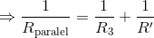

Subiectul III
La bornele unei baterii de tensiune electromotoare 
 se conectează, în serie, două consumatoare. Tensiunea la bornele primului consumator este
se conectează, în serie, două consumatoare. Tensiunea la bornele primului consumator este  , iar rezistența electrică a celui de-al doilea consumator este
, iar rezistența electrică a celui de-al doilea consumator este 
 . Puterea pe care o consumă, împreună, cele două consumatoare, are valoarea
. Puterea pe care o consumă, împreună, cele două consumatoare, are valoarea 
 .
.
- Calculaţi energia electrică consumată împreună, de cele două consumatoare, în timpul
 minute.
minute. - Determinaţi intensitatea curentului electric din circuit.
- Determinaţi randamentul circuitului electric.
- În paralel cu gruparea celor două consumatoare se conectează un al treilea consumator a cărui rezistenţă este astfel aleasă încât puterea debitată de baterie pe circuitul exterior să fie maximă. Determinaţi valoarea rezistenței electrice
 a celui de-al treilea consumator.
a celui de-al treilea consumator.
Rezolvare:
- Avem


 .
.
- Avem


Deoarece consumatoarele cunt legate în serie, intensitatea curentului care le străbate este aceeaşi.
Pentru primul consumator se cunoaşte doar tensiunea la bornele acestuia, aşadar vom scrie puterea consumată de acesta cu prima formulă:

Pentru al doilea consumator se cunoaşte doar rezistenţa acestuia, deci vom scrie puterea consumată de acesta cu a doua formulă:


Deoarece intensitatea curentului nu poate avea valori negative, doar soluţia

este adevărată.
Atunci:

 .
.
- Avem


 .
.
- Pentru ca puterea debitată de baterie pe circuitul exterior să fie maximă trebuie ca rezistenţa exterioară să fie egală cu rezistenţa internă a sursei:
 .
.
Conform legii lui Ohm avem:


 .
.
Deoarece rezistenţele  și
și  sunt legate în serie, rezistenţa lor echivalentă este:
sunt legate în serie, rezistenţa lor echivalentă este:

Cu ele vine legată în paralel o alta rezistenţă  :
:
.
Dar, pentru că puterea debitată pe circuitul exterior sa fie maximă trebuie ca rezistenţa exterioară (care este  ) să fie egală cu rezistenţa interioară a bateriei (care este
) să fie egală cu rezistenţa interioară a bateriei (care este  ):
):


 .
.